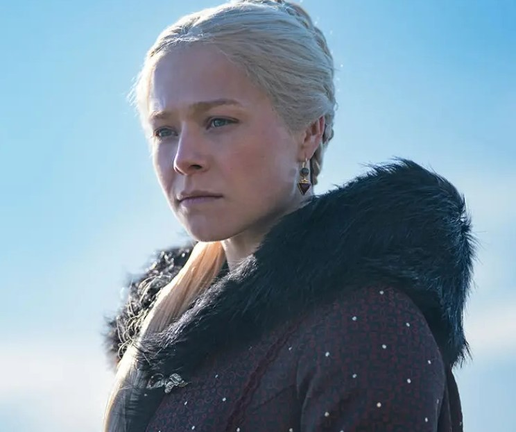
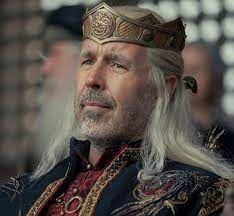
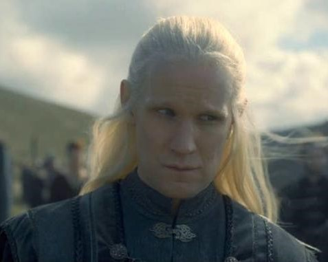
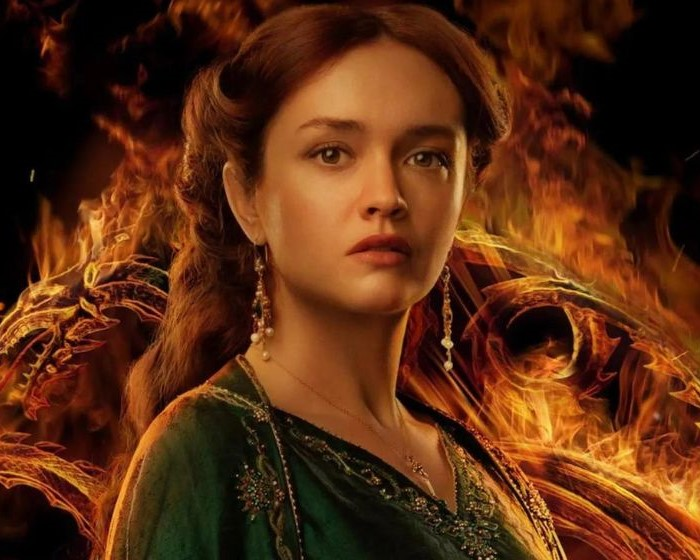
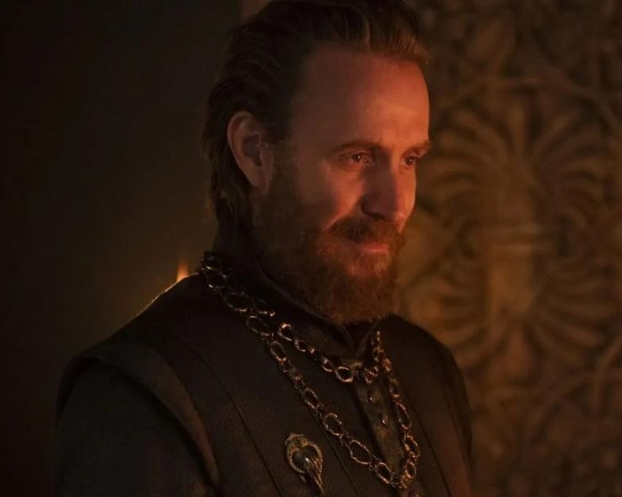
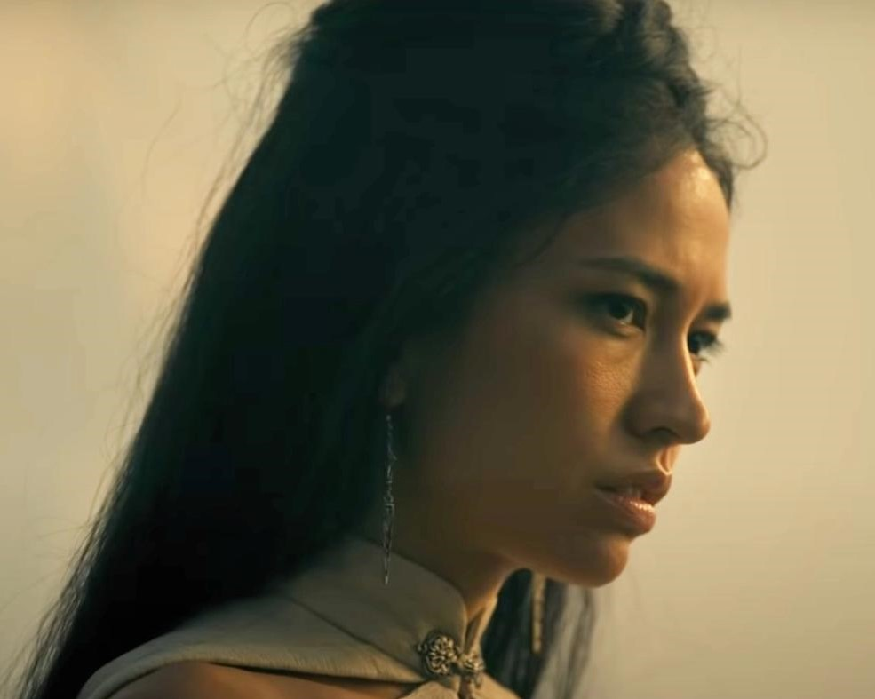
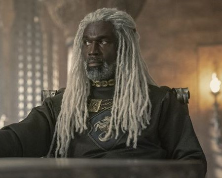

Sinopse de House of the Dragon
Como já foi dito, a série se passa 172 anos antes dos eventos apresentados em GoT, seguindo a família Targaryen enquanto ainda estavam diante do Trono de Ferro. Em House of the Dragon, Aegon o Conquistador conseguiu unir os sete reinos de Westeros. Entretanto, o que está para acontecer é depois, quando a briga pela sucessão do trono começa e está em jogo entre os filhos de Viserys I Targaryen, logo após a sua morte. Então, o público irá descobrir um outro lado da família Targaryen e a luta de Rhaenyra para se mostrar diante de todos como a principal herdeira do Trono de Ferro enquanto precisa tomar cuidado com quem está perto de si.
Personagens
-

Rhaenyra Targaryen (Milly Alcook/Emma D’arcy>) – é a principal personagem da história, filha do rei Viserys e Aemma Arryn. Por mais que ela aparenta ter tudo, ainda há um problema: ela não é um homem e isso, infelizmente, é um problema diante da sucessão do trono.
-

Rei Viserys (Paddy Considine) – pai de Rhaenyra, um de seus maiores sonhos era ter um filho homem para que ele pudesse lhe suceder no trono. Viserys I é o quinto rei da dinastia Targaryen a reinar os Sete Reinos. Ele tem como irmão Daemon Targaryen.
-

Daemon Targaryen (Matt Smith) – irmão de Viserys I e líder da guarda, ele também é tio de Rhaenyra. Além disso, o príncipe é considerado muito forte e muitos acreditam que ele tem o real sangue de dragão correndo em suas veias.
-

Alicent Hightower (Emily Carey/Olivia Cooke) – considerada a mulher mais bonita dos Sete Reinos, Alicent começa a história sendo uma amiga bem próxima de Rhaenyra. Filha de Otto Hightower, a Mão do Rei, ela cresceu convivendo com os nobres na Fortaleza Vermelha.
-

Otto Hightower (Rhys Ifan) – a Mão do Rei, Otto Hightower parece ser um homem que serve fielmente ao rei e seu reino. O pai de Alicent, apesar de ter a confiança de Viserys I, considera Daemon a maior ameaça aos Sete Reinos.
-

Misarya (Sonoya Mizuno) – uma ex-prostituta, Misarya se mudou para Westeros e fazia parte da casa de prazeres do reino. Começou como uma simples escrava de Essos, mas depois se torna uma grande aliada do príncipe Daemon Targaryen.
-

Lorde Corlys (Steve Toussaint) – Chefe da casa Velaryon, ele é casado com Rhaenys, prima do Rei Viserys. Tem dois filhos com a mulher, chamados Laena e Laenor. Além disso, carrega o título de “Serpente do Mar”, porque é o aventureiro náutico mais famoso dos Sete Reinos.